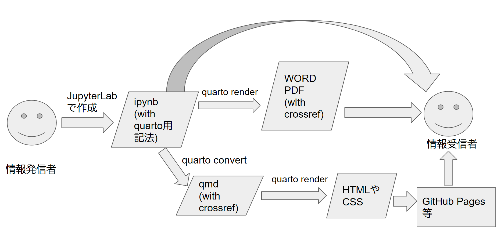

ipynb から Word や PDF のファイルを生成する
ipynb から ウェブサイトをビルドし、GitHub Pagesとして公開する
ここでは ipynb をクロスリファレンスを備えた PDF や WORD に出力するだけではなく、 ウェブサイトとして公開する方法を示します。
まず PDF や WORD の場合と異なり、ipynb からウェブサイトをビルドすることはできません。 いったん ipynb を qmd という Markdown ファイルに置き換える必要があります。
それは下記の quarto コマンドにて行うことができます。
quarto convert index.ipynb # converts to qmd
quarto convert ipynb2pdforword.ipynb # converts to qmd
quarto convert crossref4figtbl.ipynb # converts to qmd
quarto convert ipynb2website.ipynb # converts to qmd上記で ipynb から qmd への変換ができました。
qmd の YAML front matter から PDF レンダリング用の設定を削除する
ここでの目的は「PDF を作ること」ではなく「ウェブサイトを作ること」なので、 下記の設定は先程作ったすべての qmd の YAML front matter から削除します。
format:
pdf:
toc: true
number-sections: true
documentclass: bxjsarticle
classoption:
- pandoc
- ja=standard
- jafont=haranoaji
pdf-engine: lualatexqmd をウェブサイトにビルドする
qmd をウェブサイトとしてビルドするには、設定ファイル _quarto.yml を作ることが必要になります。
簡単なウェブサイトとして下記の _quarto.yml を作ります。
project:
type: website
output-dir: docs
website:
title: "quarto4rubydata"
navbar:
left:
- href: index.qmd
text: Home
- ipynb2pdforword.qmd
- crossref4figtbl.qmd
- ipynb2website.qmd
format:
html
theme: cosmo
css: style.css
toc: true 上記の yml を作った上で quarto render コマンドを実行すると、そのコマンドを実行したディレクトリ下に docs というディレクトリが作られ、 その中にウェブサイトがビルドされます。
あとはこの docs ディレクトリ以下を GitHub Pages なりにデプロイすれば、 下記のワークフローによる知識共有が実現できます。

まとめ
Quarto を用いることで JupyterLab を用いて作成した ipynb が容易にクロスリファレンスを備えた WORD や PDF、そしてウェブサイトとしても知識共有できることを示しました。
そしてそれは Python、R だけでなく Ruby においても可能であることを実証しました。
ぜひ Quarto を用いて RubyData エコシステム活用の知識をそのコミュニティと共有してください！